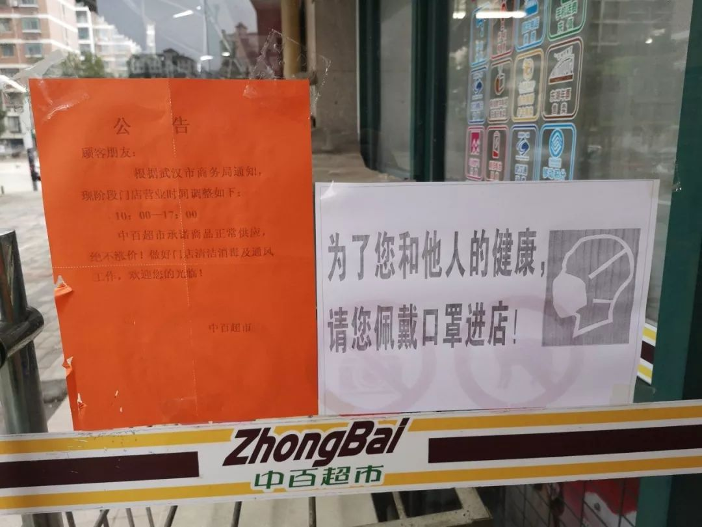
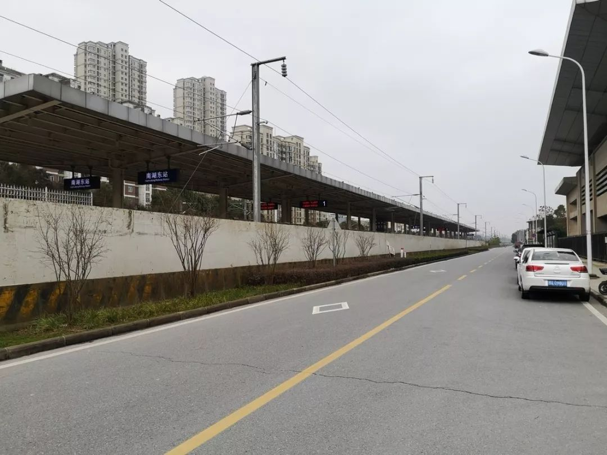
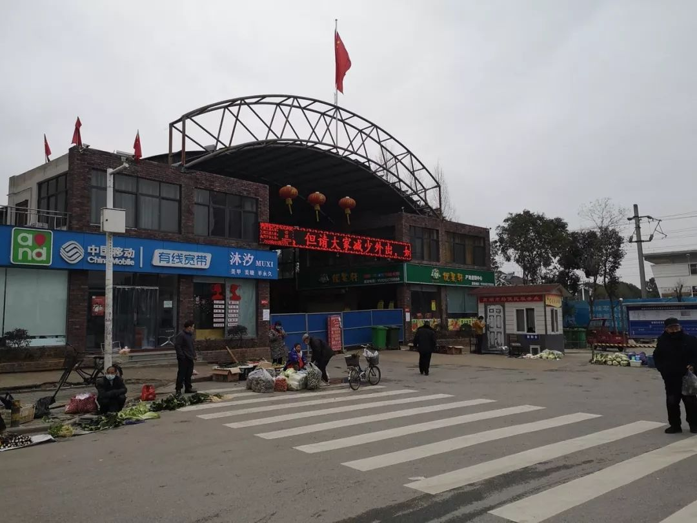
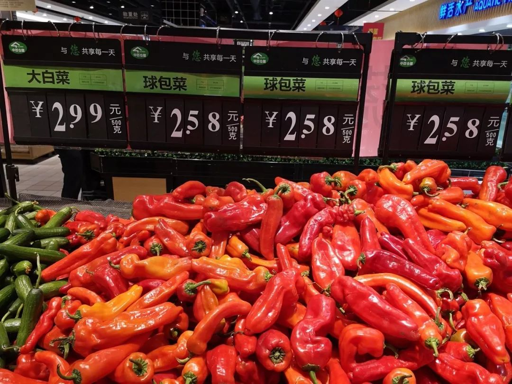

“不忘故乡” “因疫情严重禁止一切人员车辆出入” | 三明治武汉每日书04
原文链接 备份链接 今天是“武汉日常”每日书的第四篇，在孝感的学生写到当地村民自发拦路封村，尽管道路后面的横幅还写着他们希望并且欢迎在外乡亲回家；有在黄石的编剧路过黄石最繁华的步行街，发现那里几乎没有任何动静；有居住在武汉市区自愿帮助陌生 …

非常时期，武汉成了全国人民挂念、祈福的城市。封城后，武汉人民的真实生活是什么样？
正和岛自1月26日起特别推出《叶青：我在武汉疫区的第N天》专栏。叶青是一位定居武汉40年的市民，也是一名学者和官员。接下来的一段时间，他会用笔记录下亲身经历的、观察到的武汉，为此他还专门外出到大街上、到超市里，获得一手真实的信息。
这将是一份宝贵的史料。感谢他，我们得以更真切地感知到武汉疫情。让我们一起为武汉加油！
作 者：叶青 中南财经政法大学教授、博导 湖北省统计局副局长 正和岛蓝色岛邻
来 源：正和岛（ID：zhenghedao）

数据
1月27日，初三，武汉阴天。
我们继续关注武汉、关注全国的疫情。
截至1月27日24时，国家卫生健康委收到30个省（区、市）累计报告确诊病例4515例，现有重症病例976例，累计死亡病例106例，累计治愈出院60例。

总理到武汉
李克强总理27日一大早坐飞机到武汉，马不停蹄地视察了金银潭医院、火神山医院工地、武商超市、湖北省疾控中心新生物安全防护实验室。随后，他召开疫情防控工作会议。
在金银潭医院，有几个细节让人感动：口罩、护士、口号。
听到医护人员反映医用防护服、护目镜等物资需要稳定供应，护士力量需要加强等，总理当即承诺“今天晚上一定把2万套护目镜运到这里”，并要求随行的有关部门负责人协调解决。
青岛市政府于当天中午11点40分接到工信部下达的调拨任务，随后，青岛、平度两级工信部门立即排查辖区企业，找到了符合要求的青岛百胜医疗公司。该企业将正在休假的员工召回，紧急调度物资驰援。
27日20点10分，随着山航SC9001航班抵达武汉，2万套护目镜、5300个医用隔离面罩“驾到”。武汉人民感谢青岛人民！
两天内，还将有2500名医护人员，特别是护士，增援武汉。不过，现在还是地级市弱。根据我搜集的资料和网友的转告，鄂州有贵州医疗队，黄冈有湖南、山东医疗队，咸宁有云南医疗队，孝感有重庆医疗队，荆州有海南医疗队，仙桃、天门、潜江有山西医疗队。希望能够尽快全覆盖。
还有一个细节可以从视频中看到，就是武汉小护士要总理呼口号。网民说：这让总理有点“懵圈”，从来都是总理要别人呼口号的，今天怎么倒过来了？
于是，总理呼“武汉”，医务人员呼“加油”！连续三次。
这为这个寒冷的冬天带来了几分暖意。
很久很久以前，都是“三呼万岁”，现在是“三呼加油”。

超市管控一定要提升
为了进一步考察武汉市场的供应情况，27日下午4点，我与夫人戴着两层口罩到了离中南财大津发小区不远的龙城社区的中百超市。

路上人车稀少。

路边依然有周围的居民在卖菜与水果，水果竟然价格低，原本准备在春节做一笔大生意的老板在吐货。

农贸市场关闭，居民集中到超市买菜。

我注意到超市里有70-80人。大部分货架、菜台都是满满的，菜价与平时无异，其中大白菜每斤2.99元。
特别温暖的是，我看到了从重庆来的“爱心菜”。


媒体报道，截至27日下午，重庆驰援武汉的“爱心菜”已全部发往中百仓储各个门店。这些蔬菜由于售价较低，黄瓜和龙豆等所有的菜不分品种2元一斤，售卖收入也将用于捐赠，因此会采用专门的条码来收银；有生菜、上海青、黄瓜、四季豆、土豆、花菜、南瓜等品种，市民选购时注意辨别爱心菜和普通蔬菜。感谢武汉的老市长（现任重庆市长）！
但是，我觉得超市的防护问题也比较大。
两个3-4岁的小孩坐在购物车里，妈妈推着购物。小孩虽然戴着口罩，但是鼻孔、嘴巴都露出来了。大门口没有人工或者智能测温仪。排队交款的人挨得太近，空气流通不够……
因此，以下是我今天给微信“国务院客户端”的建议：
一是小超市应该有人工测温员，中型超市以上应该有像高铁站、地铁站一样的智能测温仪，在每个大门安装两台，从不同角度对进出的顾客测温。
二是10岁以下、70岁以上的人，以及孕妇在“新型肺炎”期间，尽可能不要去超市等人多的地方。这三类人士是易感人群。
三是除了口罩，建议戴一次性手套。选菜、开门、付款等都要接触物品（包括门把手）。
四是买东西交款时保持一米距离。银行、机场都是这样，超市也可以这样。
五是回家后，把用过的口罩、一次性手套，放在门口专门的袋子里，外衣裤在阳台上晾晒，鞋子不要入家门。
好在武汉现在有了网上菜场。
27日起，以华中冷链港和武汉肉联冷库为依托，武汉万吨冷链物流有限公司联手“饿了么”，推出“万吨通”网上菜场。武汉市民通过支付宝登录“饿了么”，或者直接登录“饿了么APP”，点击“买菜”即可逛菜场下单，次日上午即可在就近自提点提货。“万吨通”网上菜场在武汉市内已设立了上百个自提点，并且还在继续增设中。网上菜场不仅承诺平价销售，而且确保质量安全和供应充足。
有人说，如果封城带来不便，表示歉意。我觉得是封城晚了5天。否则就不会有500万人出城。现在武汉是“不差菜”，武汉之外的武汉人“不容易”。
这两天，武汉人在外不易的消息铺天盖地。连中央媒体都在说“鄂人不等于恶人”。各地定点接待武汉人的做法正在得到落实。
27日晚上8点，不知道是谁提议的，武汉部分小区居民开窗同声唱歌，齐喊“武汉加油”，震撼全国网友并登上微博热搜。
专家急忙制止：你们是拿生命在唱歌啊……
武汉大学人民医院精神卫生中心白汉平副主任医师认为：
1.飞沫传染是许多感染源的主要传播途径，藉由患者咳嗽、打喷嚏、说话时，喷出温暖而潮湿之液滴，病原附着其上，随空气流动飘散，短时间、短距离地在风中漂浮，由下一位宿主因呼吸、张口或偶然碰触到眼睛表面时黏附，造成新的宿主受到感染。
2.喊叫甚至带着音响分贝高，造成身体不适。首先是对睡眠、休息的干扰。其次，研究表明，噪声会使孕妇产生紧张反应，引起子宫血管收缩，以致影响供给胎儿发育所必需的养料和氧气。此外，有调查显示，吵闹环境下儿童智力发育比安静环境中的低20%。
万众一心抗疫，想唱就唱，没关系。关起门，闭上窗，在家里唱唱就好，只要心里有歌声，何怕别人听不见？
于是乎，我夫人找到机会，就在家里唱歌。
在非常时期，领导干部也不容易。在一个级别很高的新闻发布会上，台上三个领导，一个没有戴口罩，一个露出鼻孔，一个戴反了。
讲到口罩，要说一说湖北的仙桃市。
仙桃市是中国最大的无纺布卫材加工出口基地。至1月26日，仙桃已有35家企业复产，日生产口罩270万片，医用防护服2万件。其中，拓盈、裕民、誉诚、海宏、致霖等5家企业，为武汉定点生产供应医用一次性防护服，力争每天供应5000-8000套。

武汉几家人
我们家的情况是，晚上增加了集体看电影的内容。
昨天谈到学生和师母的事，大家很关心。我再来说一说。
1979年10月2日，我一个人带着一箱子衣服、一箱子书到武汉读书。现在有这么多朋友、学生，还有这么一大家子，是很开心的事。这与我的职业有关——从老师到官员。
在武汉，我有很多老师，其中中南财大的三位对我很重要。
吕调阳教授是我1983年本科论文、1986硕士论文的指导老师。我的本科论文是孔子财政思想研究，硕士论文是中国理财思想体系研究。留校以后，在中南财大首义校区，我们住得很近，也就2百米。他们家煨藕汤，师母会送一碗过来，真是“一碗汤的距离”。1989年，吕教授特别交代我，“不要出去”。一开始，我夫人的户口都上在他们家，买来的家具没有地方放，也放在他们家的客厅。真正是一家人。
蔡次薛教授也是研究财政史的。但是，更重要的是，他是我政治上的导师。他是中国民主促进会湖北省委员会的顾问，也是我1991年加入民主促进会的介绍人。加入民主党派改变了我的人生，我从此走进了人大、政协，走上参政议政的康庄大道。我相当于过上了两辈子。这两位教授已经过世。但我闭上眼睛，常常能想到他们的面孔和汤的味道。
会计史大家郭道扬教授，我是1995年认识的，1997年才考上他的博士，他是我人生后期的导师。我的博士论文题目是“财政与会计关系史研究”。2005年以来，我每个月给他理一次发，这样也可以继续接受他的指导。他现在80岁了，曾经从71岁到79岁，历时8年一笔一划手写了300万字的《中国会计通史》。作为学生，我自愧不如。这个榜样是无论如何都无法超越的。
培根说，读史使人明智。我觉得学史使人骨头硬，现在我特别喜欢提建议，建言献策。
我的老师对我的好，我应该传给我的学生。
大学老师最大的好处就是，有一批学生。这深深影响到我自己的孩子。从小孩上幼儿园开始，我就邀请本科生到我家里玩，让小孩与他们交流。后来就有硕士、博士、博士后也来了，前前后后有50多人。孩子就说，要向这些哥哥姐姐学习，将来也考大学、考博士。现在我的小孩在一家研究所工作。小孩的读书、选择专业、英语口语等等，都受到学生的影响。因此，我还要感谢我的学生。
我夫人关心我的学生，是从20多年前我的硕士生改注册会计师试卷开始的。他们很辛苦，夫人提议晚上送点汤去。这让别的老师的学生很妒忌。后来发展到来家里吃饭，几个年轻人把一盆羊肉“风卷残云”。现在我们家还网购了一张大圆桌，可以坐12人以上。在家政的帮助下，我们也会在家里请学生吃饭。那是非常快乐的场景。可惜今年不行了。
过去，我夫人会教学生做菜、恋爱；后来就是教育孩子、经营家庭问题；现在她则是教组合投资（她是学金融的）、走秀、唱歌，还居然组团旅游。她比我管的还要多。
每一个学生的小孩出生，我夫人都会去看看，包括到郑州。学生的小孩可以出门了，也都会来我们家；小孩学说话了，也会奶声奶气地叫“师爷爷”“师奶奶”，高兴得我们老两口连忙送红包。没有当过老师的人是体会不到这些的。

结语
写此文时（28日上午），武汉正阳光灿烂，蓝天白云。
这是不是一个好的兆头？
我们希望每天的死亡病例会越来越少！在全国人民的帮助下、在湖北人民的努力下，每天会更好。
再次感谢大家！
当前疫情对企业的影响越来越大，正和岛整理出《企业防疫指导手册》，希望能在疫情之下给我们的企业家们多一份参考，从容面对疫情，降低企业风险。
识别下方海报二维码即可查看手册，欢迎把手册分享给更多企业家朋友，一起有方法、有准备地共渡难关！


排版 | 三三
审校 | 羽婷主编 | 叶正新
原文链接 备份链接 今天是“武汉日常”每日书的第四篇，在孝感的学生写到当地村民自发拦路封村，尽管道路后面的横幅还写着他们希望并且欢迎在外乡亲回家；有在黄石的编剧路过黄石最繁华的步行街，发现那里几乎没有任何动静；有居住在武汉市区自愿帮助陌生 …
原文链接 备份链接 我是河南信阳人，在武汉读书，毕业后留在武汉，现居洪山区，是一个1岁多的孩子的妈妈。武汉是疫情中心，老家信阳距离武汉很近，现在也是疫情重点排查城市。 1月20号，“封城”三天前，钟南山院士提到新冠肺炎存在人传人现象。这个 …
原文链接 备份链接 编者按 这篇约稿来自一名化名为“平安”的武汉大学生，记述了她从返乡、封城，再到过年所经历的种种。这个特殊的春节，绝望与希望同在，寂静与喧嚣并存。身处「风暴中心」，她的心理有什么样的变化？让我们一起来看看她的五日。 “ …
原文链接 备份链接 这是我的朋友郭晶的日记。 记录了封城期间在武汉独居的外来女性的真实生活体验和心理感受。 她第一次发在微博上的日记被转发近5000次，第二条就严重被限流。所以我想帮她编辑转载到微信。 有朋友建议郭晶在这段时间可以学习或者 …
原文链接 备份链接 作者 | 薛芳 孙宏超 相欣 安然 马关夏 李越 编辑 | 康晓 出品｜深网·腾讯小满工作室 欢迎下载腾讯新闻APP，阅读更多优质资讯 平平安安就是年。 突袭而至的新病毒能阻止很多中国人在这个春节里团聚，但没有什么能阻 …